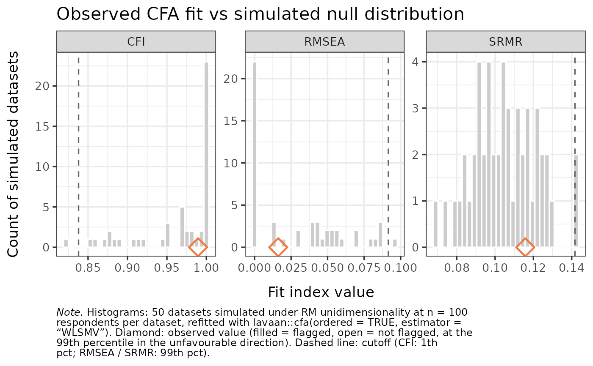

Simulates datasets from the Rasch or partial credit model fitted to your
data, fits a one-factor CFA for ordinal items to each with
lavaan::cfa() (Rosseel, 2012), and records the fit indices (CFI,
RMSEA, SRMR) and the standardized loading of each item. The simulated
data are unidimensional by construction, so the result shows what a
unidimensional scale gives at this sample size and with these items.
Pass it to RMdimCFA() for the tables and to RMdimCFAPlot() for the
figures.
Usage
RMdimCFACutoff(
data,
iterations = 250L,
percentile = 99,
output = c("list", "kable"),
parallel = TRUE,
n_cores = NULL,
verbose = FALSE,
seed = NULL,
estimator = "WLSMV"
)Arguments
- data
A data.frame or matrix of item responses, items scored from 0. One column per item, one row per person. Only complete cases are used. At least 4 items: with 3, the one-factor model has no degrees of freedom and the fit indices are perfect by construction.
- iterations
Integer. Number of simulated datasets. Default
250. For p-values inRMdimCFA(), use at least 1000.- percentile
Numeric in (50, 100). How strict the cutoffs are. Default
99. The fit indices get a one-sided cutoff in the unfavourable direction (CFI from below, RMSEA and SRMR from above). The loadings get a two-sided central interval coveringpercentile% of the simulated values, so an item is flagged when its observed loading falls in the outer100 - percentile%, split between the two tails.- output
Character. Only
"list"(default) is supported, and the function always returns the simulations."kable"gives an error that points toRMdimCFA(), where the tables now come from.- parallel
Logical. Run the simulations in parallel via mirai when it is installed. Default
TRUE.- n_cores
Integer or
NULL. Number of parallel workers. WhenNULL,getOption("mc.cores")is used. If that is unset too, a warning is given and the simulations run sequentially.- verbose
Logical. Show a progress bar. Default
FALSE.- seed
Integer or
NULL. Random seed for reproducibility. See easyRasch2-reproducibility for what this guarantees and how it interacts withparallel.- estimator
Character. The lavaan estimator:
"WLSMV"(default),"ULSMV","WLSM","ULSM","WLSMVS"or"ULSMVS". CFI and RMSEA are always the scaled versions, so only estimators with a scaled test statistic are accepted.
Value
A list with:
simulateddata.frame with one row per simulated dataset and the columns
iteration,cfi,rmseaandsrmr.simulated_loadingsdata.frame with one row per simulated dataset, an
iterationcolumn and one column per item with its standardized loading.percentileThe strictness setting.
cutoffsNamed numeric vector (
cfi,rmsea,srmr) of the one-sided cutoffs.loading_cutoffsdata.frame with
Item,lowandhigh, the two-sided interval of the loadings per item.actual_iterationsNumber of simulated datasets that could be used.
sample_nNumber of complete cases used.
sample_n_totalNumber of respondents in
data, before the complete-case filter.sample_has_naLogical. Whether
datacontained missing values.n_itemsNumber of items.
item_namesItem names.
is_polytomousLogical. Whether a PCM (rather than the Rasch model) generated the data.
estimatorThe lavaan estimator.
Details
Generating model. Each dataset is simulated from the partial credit model (or Rasch model, for dichotomous items) fitted to the observed data, with person locations drawn with replacement from the estimated ones. The simulated data therefore satisfy unidimensionality.
Estimation model. Each simulated dataset is fitted with a
one-factor model with all items as ordinal indicators
(F1 =~ I1 + I2 + ...), by WLSMV unless estimator says otherwise.
CFI and RMSEA are the scaled versions (cfi.scaled, rmsea.scaled) for
the observed and the simulated data alike. SRMR is used as it is. A
simulated dataset for which lavaan cannot compute a scaled index gets
NA for it and is left out of that index's cutoff and p-value, with a
message giving the count. The standardized loadings are est.std of
the =~ paths from lavaan::standardizedSolution().
Why simulate. Data that are unidimensional under the partial credit model will usually not give CFA fit indices at their ideal values (CFI = 1, RMSEA = 0), nor equal loadings for all items. The PCM is a logistic model, while WLSMV fits a probit model to the polychoric correlations, and finite samples add sampling variability. The simulations capture both, which gives a better reference than fixed cutoffs derived for continuous data and ML estimation.
Datasets that fail. Some simulated datasets make the estimation
fail (a polychoric matrix that is not positive definite, thresholds on
the boundary, empty categories). They are left out, and
actual_iterations gives the number that remained. If all fail, the
function stops, naming any category used only by respondents with a
zero or perfect total score.
References
Rosseel, Y. (2012). lavaan: An R Package for Structural Equation Modeling. Journal of Statistical Software, 48(2), 1-36. doi:10.18637/jss.v048.i02
See also
RMdimCFA() for the tables, RMdimCFAPlot() for the figures,
RMdimResidualPCA() and RMdimMartinLof() for other checks of
unidimensionality.
Examples
# \donttest{
if (requireNamespace("lavaan", quietly = TRUE) &&
requireNamespace("eRm", quietly = TRUE)) {
data("raschdat1", package = "eRm")
# Few iterations for a fast example. Use 250 or more in real analyses.
sim <- RMdimCFACutoff(raschdat1[, 1:8], iterations = 50,
parallel = FALSE, seed = 1)
# Observed-vs-expected tables
RMdimCFA(raschdat1[, 1:8], cutoff = sim)
if (requireNamespace("ggplot2", quietly = TRUE)) {
plots <- RMdimCFAPlot(sim, data = raschdat1[, 1:8])
plots$loadings
plots$fit
}
}

# }